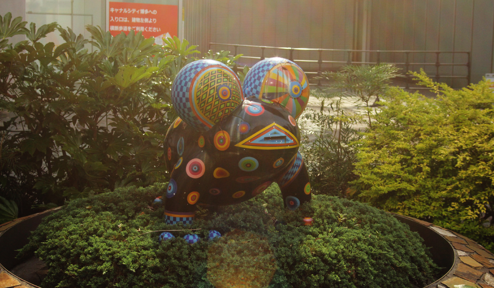
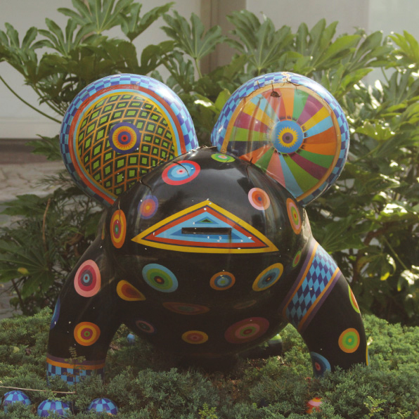
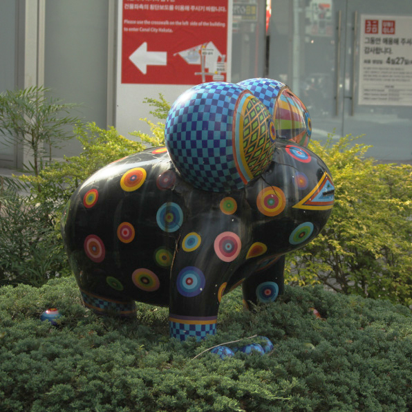

洪易（ホンイ）
 
キャナルシティ博多イーストビルに設置されているこの作品。交差点で信号待ちをしている時に
目に入る派手な模様と色彩をしている。作者は台湾の芸術家、洪易（ホンイ）氏。誇張を加えた
人間や動物の様子をテーマにした作品を、多く手掛けた。奇抜でグロテスクでありながら、ポッ
プさとエネルギーを感じられるのが彼の作品の特徴だ。現在も台湾を中心に作家活動を行なって
おり、SNSやWEBサイトを通して、彼の活動を見ることが出来る。